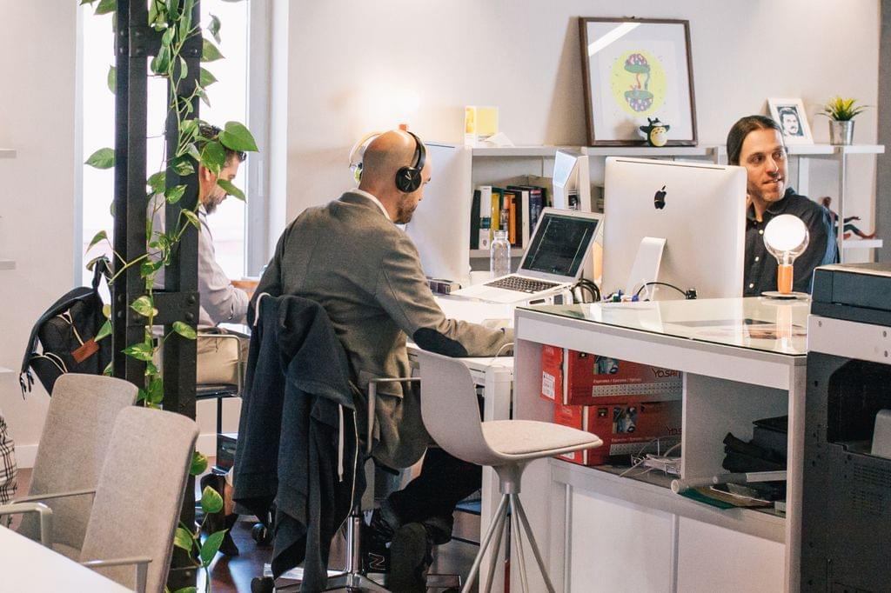

Thế hệ tôi đánh đổi tương lai như nào?
Lúc nãy, vợ tôi hỏi rằng tại sao thế hệ trẻ ngày nay lại chọn những thú vui không lành mạnh nhiều như vậy. Câu hỏi khiến tôi suy nghĩ, nhất là khi cô ấy còn gửi cho tôi một bài tâm sự từ một người nghiện cần sa suốt 7 năm, nói rằng nếu không dùng thì sẽ rơi vào trầm cảm.
Nếu là tôi của ngày trước, tôi sẽ cảm thấy thương cảm cho câu chuyện này. Nhưng bây giờ, tôi nhìn thẳng vào thực tế. Tôi nhận ra rằng mọi thứ trên đời đều có nhân quả.
Kết quả mà bạn có hôm nay là hệ quả của những lựa chọn bạn đưa ra trong quá khứ. Mỗi người đều tự chịu trách nhiệm cho hành vi của mình, dù bạn có nhận ra hay không.
Tôi không phủ nhận rằng hoàn cảnh sống, áp lực, hay tổn thương tâm lý có thể ảnh hưởng đến quyết định của một người. Tôi hiểu rằng các bạn làm vậy cũng có nguyên nhân.
Có thể bạn lớn lên trong một gia đình thiếu tình thương, bị áp lực xã hội đè nặng, hoặc đơn giản là không biết cách đối mặt với cảm xúc tiêu cực.
Những hành động của bạn – dù đúng hay sai – đều phản ánh mức độ tự nhận thức bản thân, trách nhiệm với chính mình, và ý thức về mục tiêu sống. Nếu bạn chọn niềm vui ngắn hạn, chọn cách né tránh vấn đề bằng những thú vui thiếu lành mạnh, thì bạn không thể mong đợi một kết quả ngang hàng với những người sống trách nhiệm và kỷ luật.
Lưu ý: Bài viết mang tính xả stress của người viết được dựa trên kiến thức, thông tin, hiểu biết và góc nhìn chủ quan của người viết. Các dẫn chứng đều có đầy đủ, nên ai muốn đưa lập luận, hãy làm tương tự.
"Animals act on instinct; humans have the gift of reason. Use it wisely to master your desires."

The path of least resistance is the path of weakness.
Strength is found in mastering your desires.
1. Xã hội học: Di sản của các thế hệ trước
Tôi nhìn nhận rằng phần nào sự dễ dãi của thế hệ ngày nay bắt nguồn từ sự tích lũy của các thế hệ trước. Baby Boomers, Gen X, và Gen Y sống trong những giai đoạn khó khăn – chiến tranh, khủng hoảng kinh tế, và sự nghèo đói. Họ làm việc quần quật để xây dựng tài sản, để thế hệ sau không phải chịu những gì họ đã trải qua.
Nhưng thế hệ Gen Z lớn lên trong sự đủ đầy ấy, họ không phải gánh nặng áp lực sinh tồn như cha mẹ mình. Nhiều người được cha mẹ bù đắp quá mức, tạo nên một thế hệ thiếu động lực, chỉ biết hưởng thụ và tìm kiếm niềm vui tức thì thay vì xây dựng giá trị bền vững.
2. Triết học: Nhân quả và vòng lặp tự hủy hoại
Cuộc sống thiếu mục đích và ý thức về trách nhiệm đẩy nhiều người trẻ vào vòng lặp tự hủy hoại. Họ không đủ tự nhận thức để hiểu rằng niềm vui tức thì – từ chất kích thích, các mối quan hệ không lành mạnh, hay các thú vui ngắn hạn khác – chỉ là dopamine giả, không bao giờ giải quyết được vấn đề gốc rễ của họ.
Luật nhân quả rất rõ ràng. Những người lựa chọn sống có trách nhiệm, tập trung xây dựng bản thân sẽ nhận được thành quả tương xứng. Còn những người chọn thú vui ngắn hạn, sống buông thả, thì hệ quả họ phải đối mặt cũng hoàn toàn xứng đáng.
3. Kinh tế học: Chi phí chìm của sự lựa chọn
Mọi hành động đều có chi phí. Khi bạn chọn dành thời gian cho những thú vui ngắn hạn, bạn đã đánh mất cơ hội sử dụng thời gian đó để học tập, phát triển bản thân, hoặc tạo ra giá trị lâu dài.
Tôi đã đánh đổi thời gian thời đi học của mình để tập trung phát triển bản thân.
Trong khi bạn bè tôi vui chơi, gái gú, hoặc chạy theo những mối quan hệ hời hợt, tôi tập trung học thêm kỹ năng, tìm định hướng, và đặt mục tiêu rõ ràng.
Bạn gặp chuyện căng thẳng, bạn chọn cách "xả stress" bằng việc hút cần sa, quan hệ tình dục bừa bãi, hay tìm kiếm dopamine ngắn hạn để khỏa lấp nỗi đau tâm lý. Chúng ta khác nhau hoàn toàn trong cách suy nghĩ và hành động.
4. Tâm lý học: Tổn thương và lựa chọn sai lầm
Tôi không phủ nhận rằng nhiều người trong số các bạn chịu tổn thương tâm lý từ gia đình hoặc xã hội. Nhưng đó không thể là lý do để bạn buông thả chính mình.
Tìm đến những thú vui thiếu lành mạnh chỉ là cách bạn trốn tránh vấn đề.
Hút cần sa, chơi bời, hay các hành vi tương tự chỉ mang lại dopamine giả. Chúng không bao giờ giải quyết được gốc rễ vấn đề, mà chỉ đẩy bạn sâu hơn vào vòng lặp tự hủy hoại.
Tôi Và Bạn: Hai Con Đường Khác Nhau
Tôi không phải là người hoàn hảo, nhưng tôi đã chọn cách sống có trách nhiệm từ rất sớm. Tôi biết rằng mỗi hành động của mình đều có hệ quả. Và tôi chấp nhận đánh đổi những thú vui ngắn hạn để đạt được mục tiêu dài hạn.
Bạn thì khác. Bạn chọn cách sống buông thả, để rồi khi hệ quả xảy đến, bạn đổ lỗi cho hoàn cảnh, cho gia đình, cho xã hội. Nhưng thực tế là, bạn luôn có quyền lựa chọn.
- Khi tôi gặp tổn thương tâm lý, tôi chọn cách giải quyết vấn đề từ gốc, thay vì chạy trốn bằng những thú vui vô nghĩa.
- Khi tôi gặp khó khăn, tôi chọn tập trung vào mục tiêu, thay vì than vãn hoặc tìm cách xả stress tạm thời.
Chúng ta khác nhau trong cách nghĩ, trong hành động, và trong sự đánh đổi.
Vậy tại sao bạn nghĩ rằng bạn có thể đạt được kết quả như tôi khi bạn không nỗ lực như tôi?
Cuộc sống không công bằng, nhưng nó luôn công tâm với những người chịu trách nhiệm cho hành động của mình. Tôi hiểu bạn, tôi không phán xét bạn.
Nhưng tôi không thể chấp nhận rằng bạn nghĩ mình xứng đáng nhận được kết quả ngang bằng với những người đã đánh đổi và hy sinh.
Nếu bạn không sẵn sàng thay đổi, không sẵn sàng chịu trách nhiệm, thì bạn chỉ có thể trách bản thân mình mà thôi. Và điều đó hoàn toàn xứng đáng.
-----------------------------
Tuong Chun